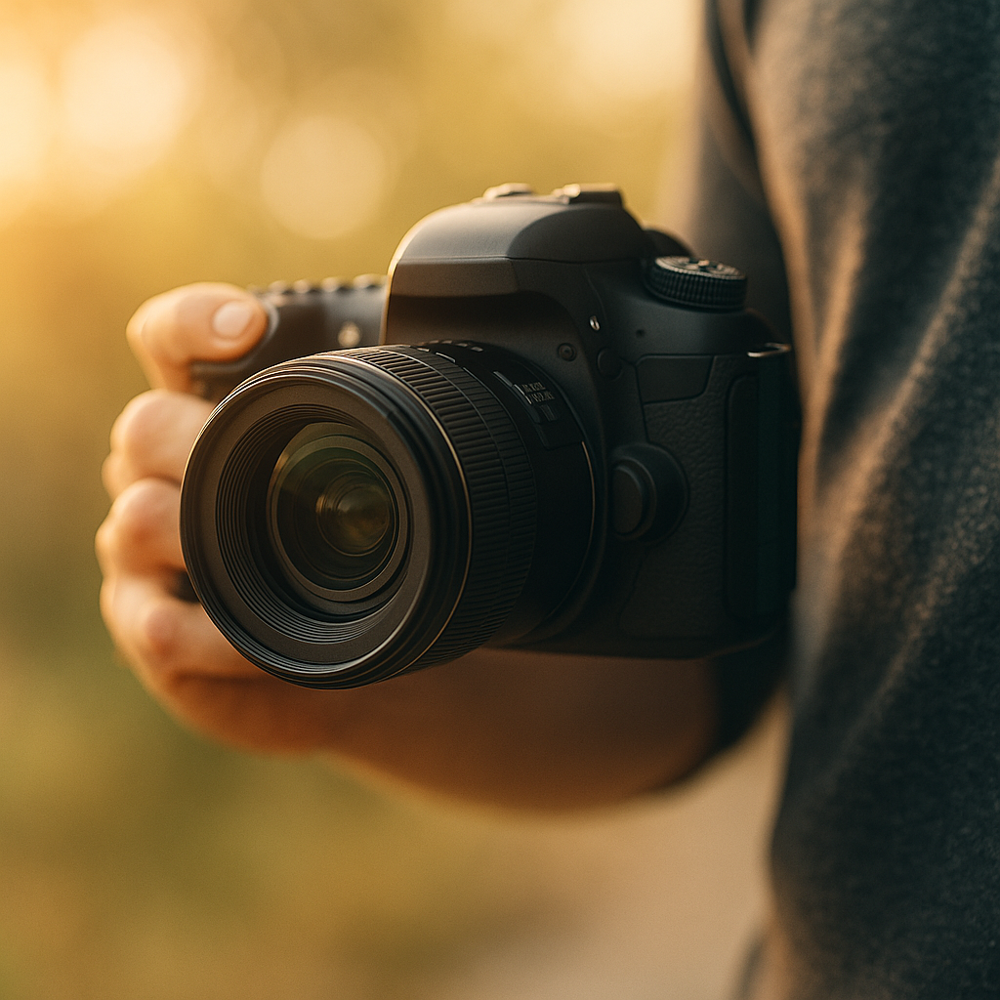

คำอธิบายรายวิชา: ถ่ายภาพ (Photography)
-รายวิชานี้มุ่งเน้นให้ผู้เรียนมีความรู้ความเข้าใจในพื้นฐานของการถ่ายภาพ ทั้งในเชิงเทคนิคและศิลปะ ผู้เรียนจะได้เรียนรู้เกี่ยวกับประเภทของกล้องถ่ายภาพ หลักการทำงานของกล้อง องค์ประกอบสำคัญของภาพถ่าย และเทคนิคการถ่ายภาพในสถานการณ์ต่าง ๆ รวมถึงการแต่งภาพเบื้องต้นเพื่อเพิ่มคุณภาพของภาพถ่ายอย่างเหมาะสม โดยเน้นการเรียนรู้ทั้งภาคทฤษฎีและภาคปฏิบัติผ่านกิจกรรม เวิร์กช็อป และโครงงานการถ่ายภาพ เพื่อให้ผู้เรียนสามารถประยุกต์ใช้ความรู้ในการสร้างสรรค์ผลงานภาพถ่ายที่สื่อสารได้อย่างมีประสิทธิภาพ และพร้อมต่อยอดไปสู่การใช้งานในระดับมืออาชีพหรือเชิงพาณิชย์
สาระสำคัญของรายวิชา:
-ความรู้เบื้องต้นเกี่ยวกับการถ่ายภาพและอุปกรณ์ต่าง ๆ
-องค์ประกอบภาพถ่ายที่ช่วยสร้างภาพที่สื่อความหมายและน่าสนใจ
-เทคนิคการถ่ายภาพเบื้องต้นในรูปแบบต่าง ๆ เช่น ภาพบุคคล ภาพวิว ภาพแสงน้อย
-การปรับแต่งภาพเบื้องต้นด้วยโปรแกรมและแอปพลิเคชันยอดนิยม
เมื่อเรียนจบรายวิชานี้ ผู้เรียนจะสามารถ
-อธิบายหลักการถ่ายภาพและการทำงานของกล้องได้อย่างถูกต้อง
-ใช้กล้องถ่ายภาพเพื่อสร้างสรรค์ผลงานภาพถ่ายในสถานการณ์ต่าง ๆ ได้
-นำองค์ประกอบภาพถ่ายมาใช้ในการจัดองค์ประกอบภาพได้อย่างเหมาะสม
-แต่งภาพถ่ายเบื้องต้นได้ด้วยโปรแกรมหรือแอปพลิเคชันที่เหมาะสม
-วิเคราะห์และประเมินคุณภาพของภาพถ่ายได้ในระดับพื้นฐาน
